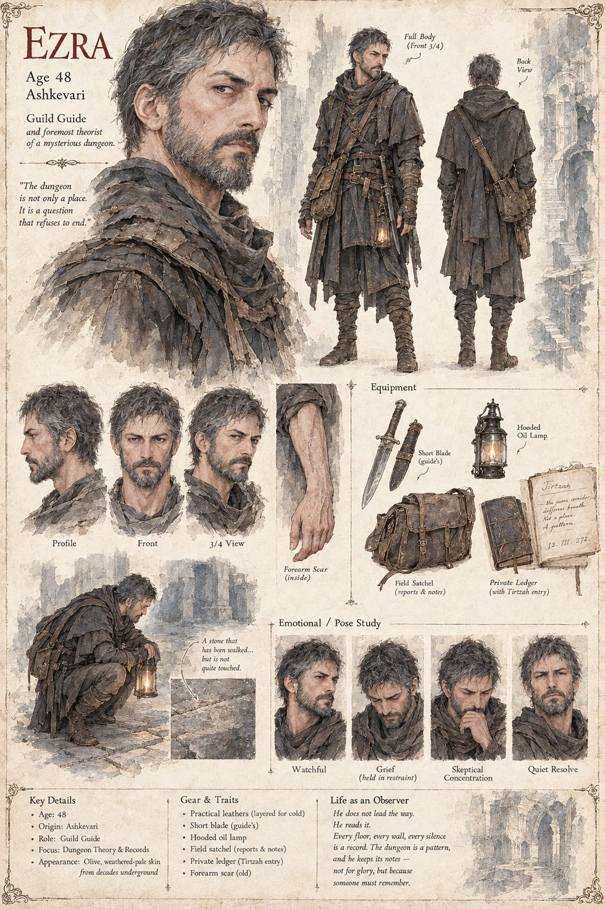

Ezra
Guild Guide · foremost theorist of the Catacomb · age 48
A guild guide who grew from a boy carrying rope and lamp-oil into the guild's de facto master theorist: thirty years of cross-referenced field reports, and several conclusions — that guardians are sometimes rebuilt outright, that the gold's placement is no accident, that whatever keeps the hillside's accounts adjusts its own methods in response to the guild's — too unsettling for the board to publish. He earned the caution the hard way: his own teacher, Tirtzah, died testing a theory of his that he'd never tested himself first. He leads Nairi's twelve down to Level 101, and is the one who eventually reconstructs, from the Observer's own scattered notes, what the choosing of her brother's armor actually meant.
“The dungeon is not only a place. It is a question that refuses to end.”
Appears in The Stolen Prince War